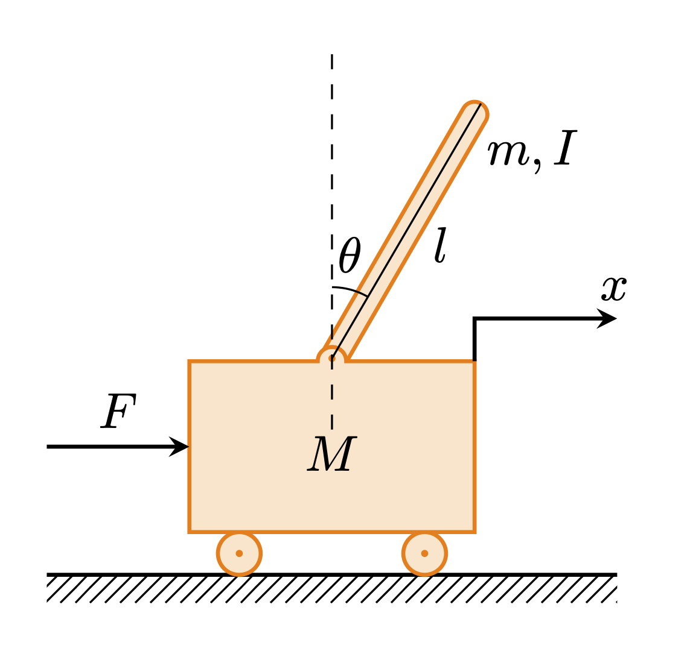

Pendulum on a Cart
Description of the problem

Consider the dynamics of an inverted pendulum mounted to a motorized cart. The inverted pendulum system is a well-known example in control system literature due to its instability without control. In other words, the pendulum will fall over if the cart isn’t moved to keep it balanced. This system has practical applications, such as the attitude control of a booster rocket during takeoff.
\begin{align} m\ddot{x}(t) + c\dot{x}(t) + kx(t) = F(t) \end{align}
where \(m, c\) and \(k\) are the mass, damping and spring constants. Variable \(x(t)\) represents the displacement of the mass from the equilibrium and the external forcing is denoted by \(F(t)\). In a first-order state-space form with \(x_1 = x\) and \(x_2 = \dot{x}\), the continuous-time model (including its measurement equation) becomes
\begin{align} \dot{\boldsymbol{x}}(t) &= \begin{bmatrix} \dot{x}_1(t)\\ \dot{x}_2(t) \end{bmatrix} = \begin{bmatrix} 0 & 1\\ -\dfrac{k}{m} & -\dfrac{c}{m} \end{bmatrix} \begin{bmatrix} x_1(t)\\ x_2(t) \end{bmatrix} + \begin{bmatrix} 0 \\ 1 \end{bmatrix}F(t) = A_c\boldsymbol{x}(t) + B_cu(t),\\ \boldsymbol{y}(t) &= \begin{bmatrix} 1 & 0 \\ 0 & 1 \end{bmatrix}\begin{bmatrix} x_1(t)\\ x_2(t) \end{bmatrix} = C\boldsymbol{x}(t) + Du(t),\\ \end{align} where \begin{align} A_c = \begin{bmatrix} 0 & 1\\ -\dfrac{k}{m} & -\dfrac{c}{m} \end{bmatrix}, \quad B_c = \begin{bmatrix} 0 \\ 1 \end{bmatrix}, \quad C = \begin{bmatrix} 1 & 0 \\ 0 & 1 \end{bmatrix}, \quad D = \begin{bmatrix} 0 \\ 0 \end{bmatrix}. \end{align} Assuming that \(u(\tau)\) is constant between sample times, i.e. \(u(\tau) = u(k\Delta t)\) for \(k\Delta t\leq \tau < (k+1)\Delta t\), let’s define the discrete-time model \begin{align} \boldsymbol{x}_{k+1} &= A\boldsymbol{x}_{k} + Bu_k,\\ \boldsymbol{y}_{k} &= C\boldsymbol{x}_{k} + Du_k, \end{align} where \begin{align} A = e^{A_c\Delta t}, \quad B_c = \int_{0}^{\Delta t}e^{A_ct}\mathrm{d}tB_c. \end{align} Given a time-history of \(\boldsymbol{x}(t_k)\) and \(u(t_k)\), the objective is to find a realization \((\hat{A}, \hat{B}, \hat{C}, \hat{D})\) of the discrete-time linear model.